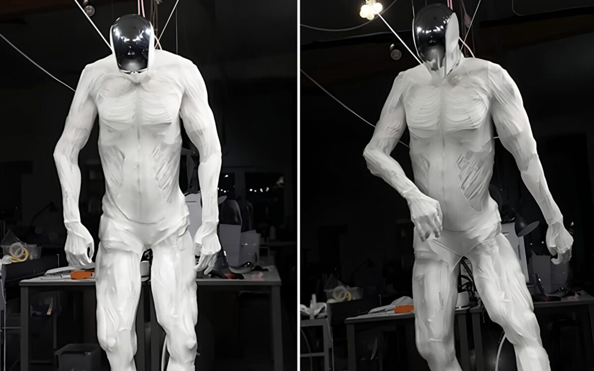
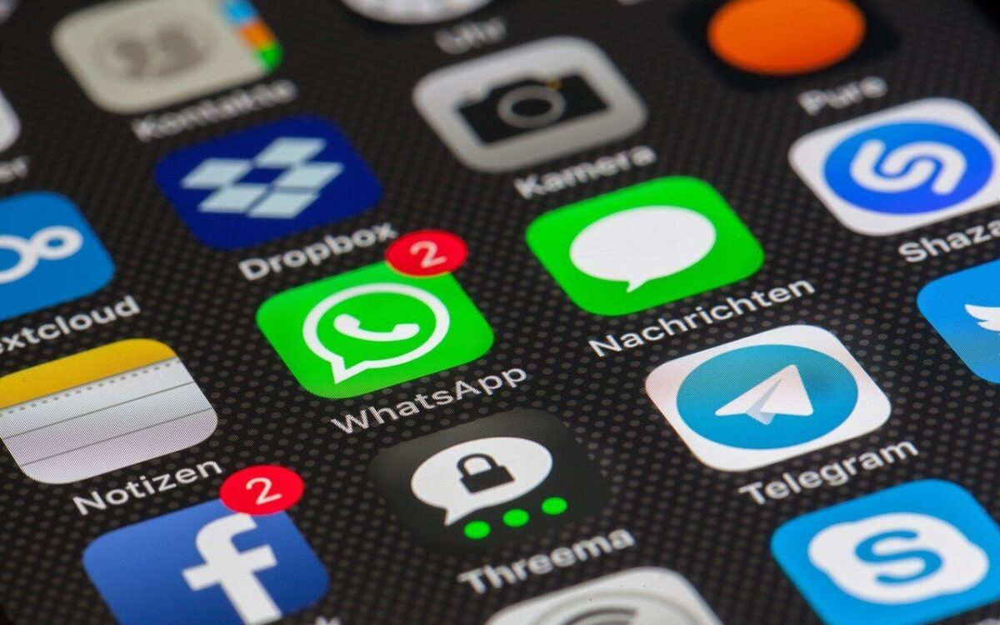
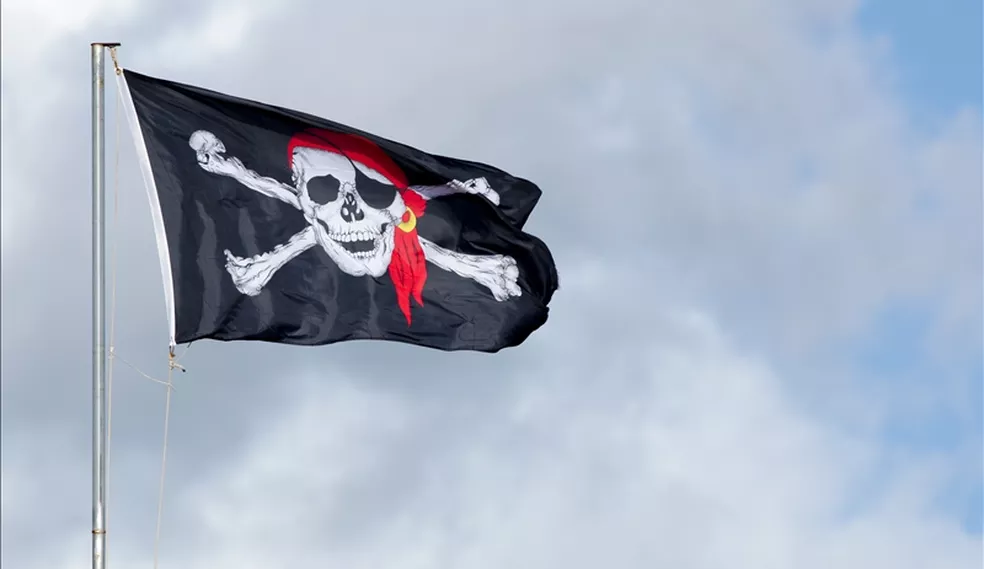

Últimas Notícias

ROBÔ HUMANOIDE SIMULA A ESTRUTURA MUSCULAR
O cinema e a literatura destravaram um medo na nossa mente há muito tempo: a ideia de uma revolta dos robôs contra os seus criadores. A rebelião das máquinas já foi tema de livros, de histórias em quadrinhos, da peça de teatro R.U.R. (de 1920) e é a premissa do filme Eu, Robô, de 2004.

TELEGRAM VS WHATSAPP: QUAL É MAIS SEGURO?
Quase todos os brasileiros utilizam um ou mais aplicativos de mensagens diretas. Esses podem ser usados para se comunicar com amigos e familiares, compartilhar arquivos e criar chats de grupo.

RISCOS DE USAR PROGRAMAS “CRACKEADOS”
Um malware descoberto pela empresa de segurança Malwarebytes na última semana levantou mais uma vez os perigos que softwares piratas podem trazer ao usuário. A nova ameaça se disfarça de uma suposta versão crackeada do programa Adobe Zii para enganar vítimas e invadir o macOS
Principais manchetes